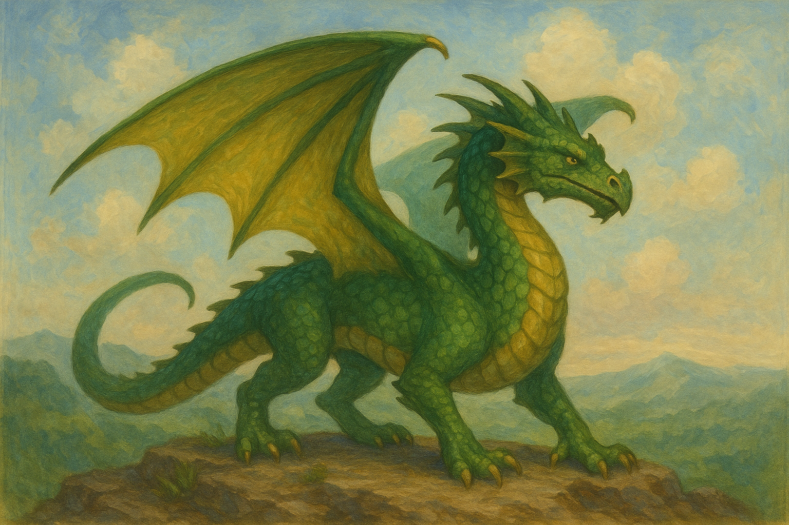

Benvenuto nel Mondo Magico...
Dove lo scorrere del tempo si piega ai desideri del cuore,
le fenici risorgono dalle fiamme,
i draghi danzano tra le nuvole
e gli unicorni custodiscono segreti antichi come le stelle.
Un viaggio straordinario in un luogo fuori dal tempo,
dove ogni passo è un'avventura con compagni magici
che rendono ogni incontro un incanto.
Un'occasione che capita una volta nella vita:
la possibilità di varcare le porte di un regno sospeso tra sogno e realtà,
dove l’immaginazione prende il volo e la meraviglia non ha confini.
Preparati a vivere l 'incanto.

| Nome | Specie | Livello di Potenza | Disponibilità |
|---|---|---|---|
| Fira | Fenice | 95 | Disponibile |
| Stormwing | Drago | 100 | Non disponibile |
| Silvershadow | Unicorno | 88 | Disponibile |
| Grumblebeard | Grifone | 92 | Disponibile |
| Creature Totali | 4 | ||
Domande e Risposte
- Q: Quanto tempo richiede l'adozione?
A: La maggior parte delle creature è pronta entro 3–5 giorni magici.
Adotta una creatura - Q: È richiesta la formazione?
A: La formazione di base è richiesta per draghi e grifoni. - Q: Posso adottare più di una creatura?
A: Sì, se si dimostra una alta compatibilità magica.